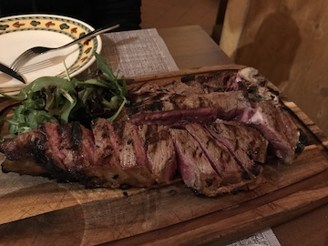

Three years ago, I had the opportunity to travel to Northern Italy and taste some of the best food I've had in my life! I've include my favorite meals below.
Florence is famous for "Bistecca alla Florentina", which is a delicious cut of meat. Most restaurants have large sides of beef hanging in the windows. It's a massive cut of meat, and so delicious!
Italy is famous for gelato. We enjoyed this sweet treat everyday. I've listed below my top three flavors:
If you have a chance to visit Northern Italy, I highly recommend these restaurants.
| City | Restaurant Name |
|---|---|
| Monterosso | Miky Ristorante |
| Florence | La Bistecca Osteria Fiorentina |